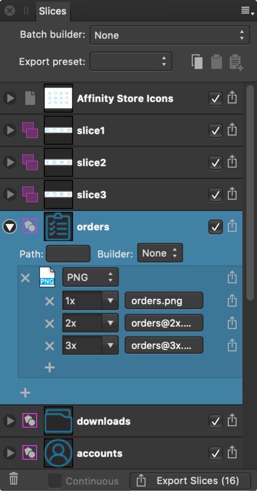

The Slices panel allows you to export defined areas of your design to universally recognized image formats.
Once an export area has been defined, the Slices panel allows you to export the area at various sizes and formats.
The panel can be populated with one or more slices. Each slice possesses a single export setup, within which multiple export formats (detailing file format and scaling options) may be stored. In turn, each export format can have multiple export sizes. This allows different graphics formats, of different sizes, to be exported from each slice simultaneously.

The following options are available in the panel:
The following options are available in the export setup for each slice entry:
You can store multiple formats within every slice's export setup. The following options are available for each format: